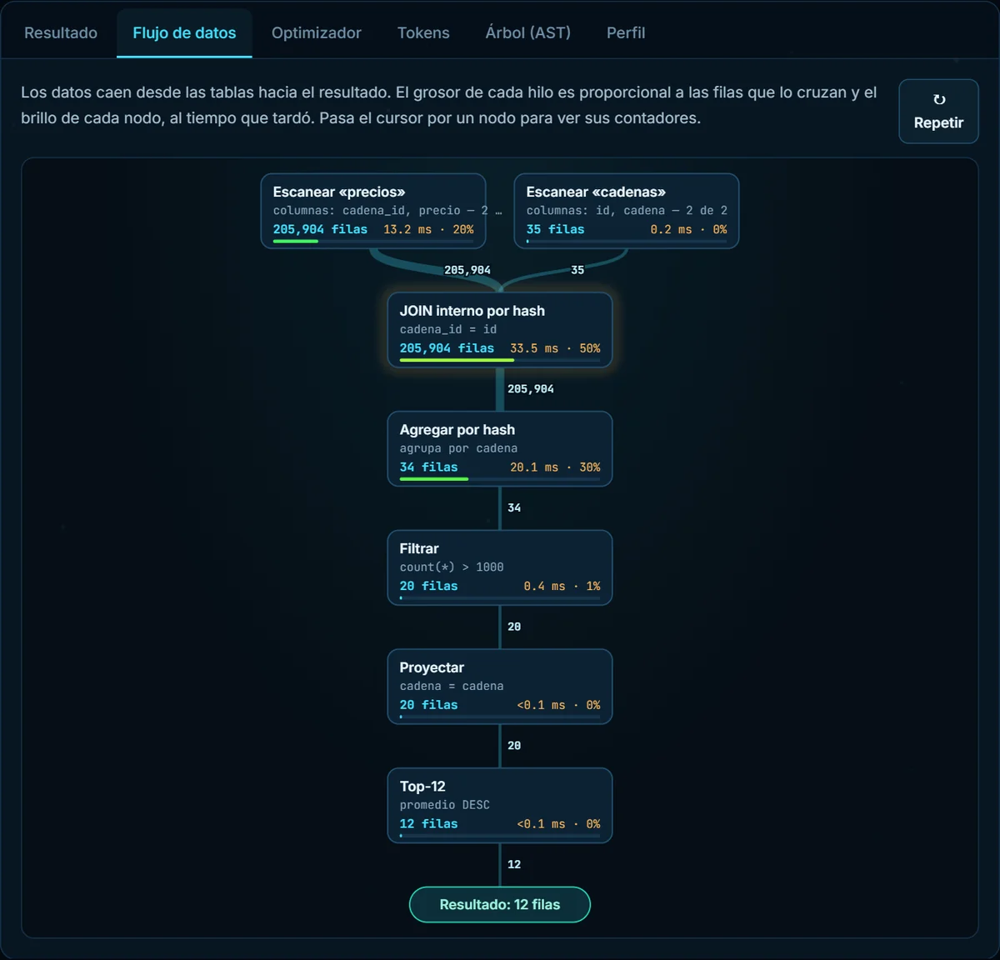
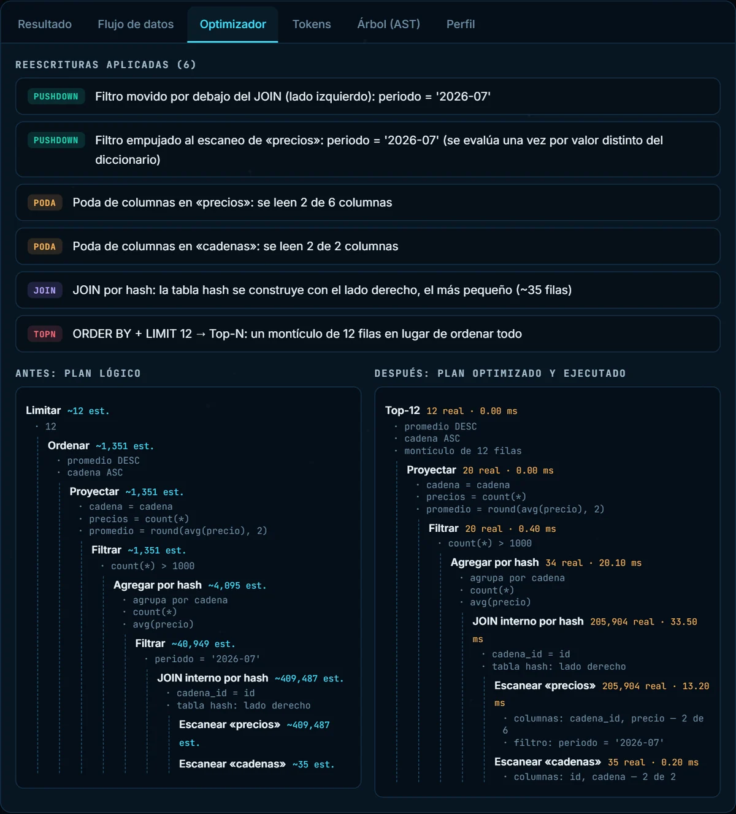
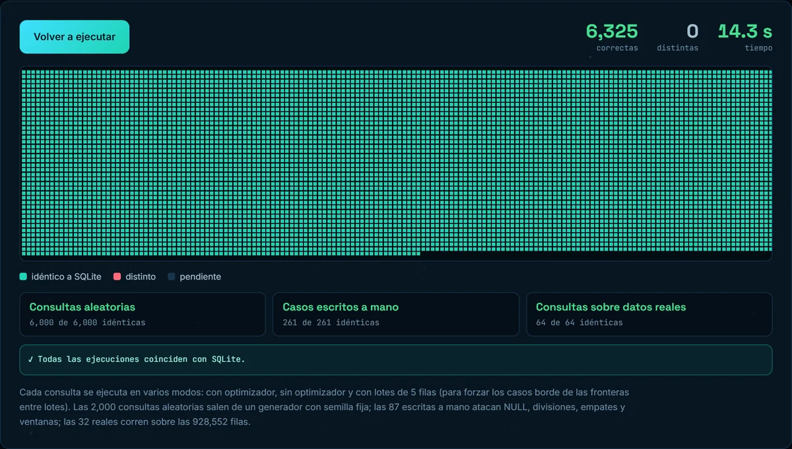
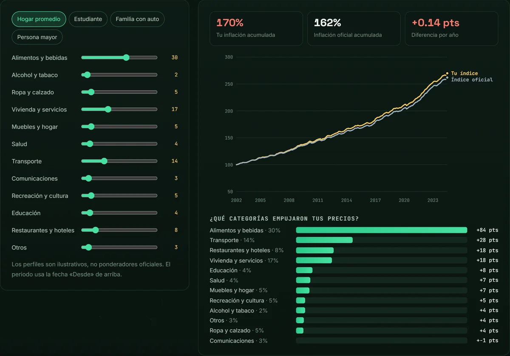
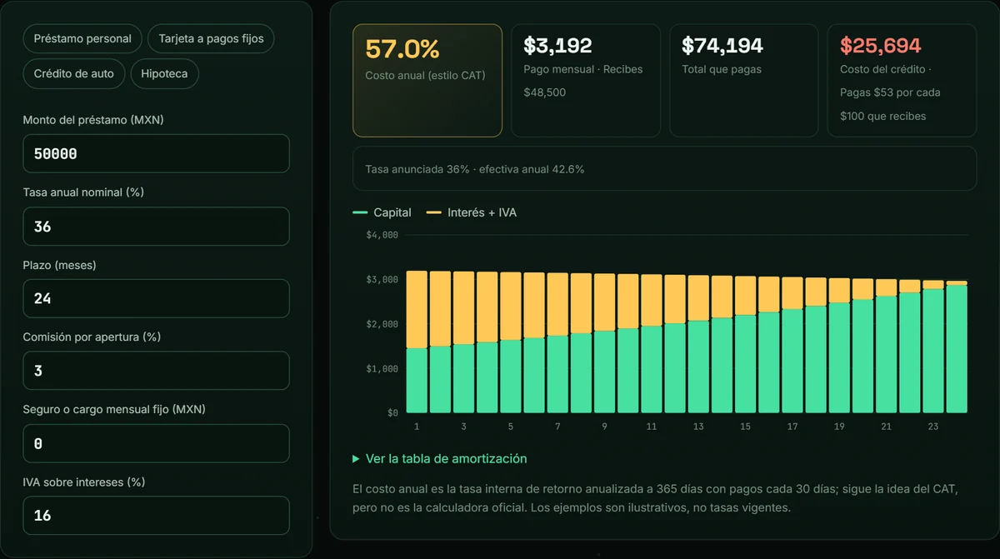
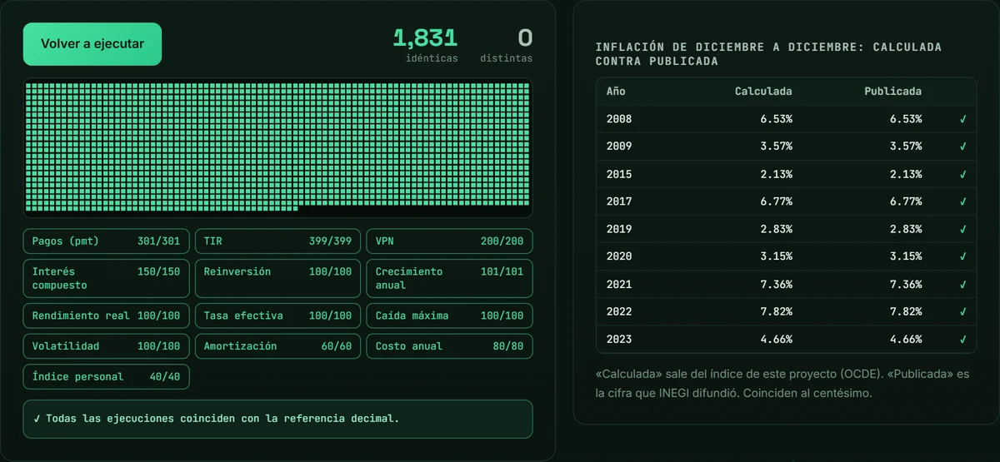

Obtener y limpiar datos
Partí de 1.46 millones de filas sin procesar para llegar a tablas comparables, y documenté cada paso: cuántas filas quedaron y por qué descarté las demás.
Evidencia: Canasta Básica MX ↗Análisis de datos · Ciudad de México
Soy Axel Alejandro Martínez Ramírez, analista de datos con formación en Ingeniería Mecatrónica por la UNAM. Me gusta tomar información dispersa, ordenarla con SQL y Python y contar con claridad lo que muestra, en español y en inglés, para que un equipo pueda decidir con confianza.
01
Cada punto enlaza a un proyecto donde puedes comprobarlo tú mismo.
Partí de 1.46 millones de filas sin procesar para llegar a tablas comparables, y documenté cada paso: cuántas filas quedaron y por qué descarté las demás.
Evidencia: Canasta Básica MX ↗Escribo consultas con CTE y funciones de ventana, y procesos que se ejecutan de principio a fin con un solo comando, respaldados por 116 pruebas automáticas.
Evidencia: consultas SQL ↗Calculo con rigor los indicadores de paid media, evalúo pruebas A/B para evitar falsas alarmas y mido la efectividad de campañas con línea base y prueba placebo.
Evidencia: Paid Media Kit ↗Cada gráfica comunica una conclusión, con cifras que cualquiera puede seguir y las limitaciones a la vista. En español y en inglés (C1).
Evidencia: ¿Tiembla más en septiembre? ↗02
Todos parten de datos abiertos, explican su método y dejan claro lo que no se puede afirmar.
Proyectos de ingeniería
Una base de datos escrita desde cero y una calculadora de finanzas con fórmulas verificadas. Ambas funcionan en el navegador, sin servidor, y contrastan sus resultados con una referencia independiente.



Escribes una consulta y ves sus tokens, su plan, las reescrituras del optimizador y cómo fluyen los datos. Lo construí con ayuda de IA; el diseño y las pruebas están documentados.



Indicas una cantidad y una fecha y ves qué fue de tu dinero en México, cómo se compara tu inflación personal con la oficial y cuánto cuesta realmente un crédito. Datos abiertos hasta julio de 2024. Lo construí con ayuda de IA; no constituye asesoría financiera.
03
Un resultado llamativo es motivo para revisar con más cuidado, no para publicar de inmediato.
Cada análisis empieza con una decisión que alguien necesita tomar.
Cada paso indica cuántas filas quedan y por qué.
Mismo producto, misma tienda; indicadores sobre totales, no promedios de promedios.
Código con pruebas automáticas y datos que cualquiera puede descargar de nuevo.
También escribo lo que los datos no permiten afirmar.
+2.6 °C +0.7 °C
La fuente de temperaturas cambió de modelo meteorológico en 2017 y generó un salto falso. Solicitar un único modelo para los 46 años lo resolvió.
Calor extremo MX ↗51 29
Caracteres invisibles en las notas al pie de Wikipedia unían oraciones y exageraban la dificultad de lectura. Tras limpiarlos, los artículos «muy difíciles» bajaron de 51 a 29.
Lectura fácil en salud ↗−45% 0%
La mediana nacional del espinazo de cerdo cayó de $129 a $71 porque cambió la mezcla de tiendas visitadas. En las mismas 114 tiendas, el precio típico no se movió.
Canasta Básica MX ↗04
2025
Elaboré reportes de desempeño del proveedor de paquetería, concilié liquidaciones y di seguimiento a las incidencias de principio a fin.
2025
Fui el enlace entre la sociedad estudiantil, la facultad y organizaciones externas, y me encargué de planear y ejecutar proyectos dentro de plazos y presupuesto.
2023 – 2024
Lideré un equipo multidisciplinario que obtuvo el primer lugar entre los equipos participantes.
2022 – 2026
05
Busco incorporarme como analista de datos, con especial interés en marketing digital y medición de campañas. Estoy en Coyoacán, Ciudad de México, y con gusto platicamos.
martinez.ramirez.axel.alejandro04@gmail.com